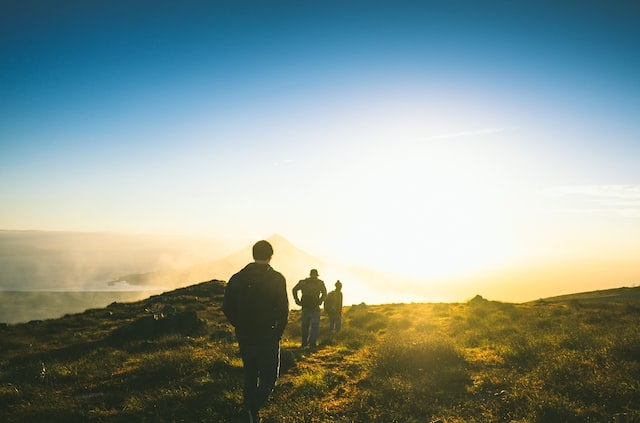
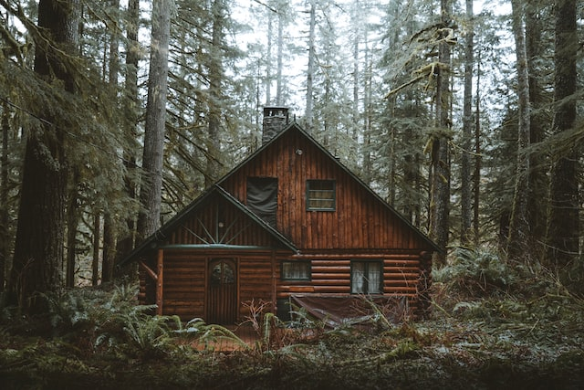
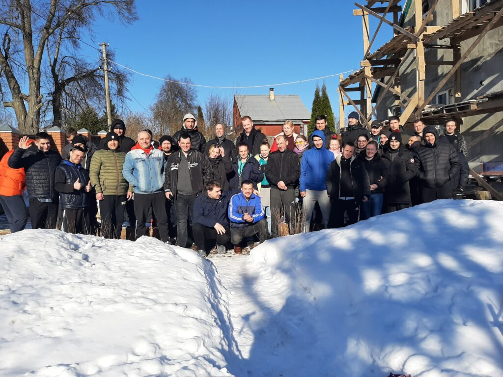
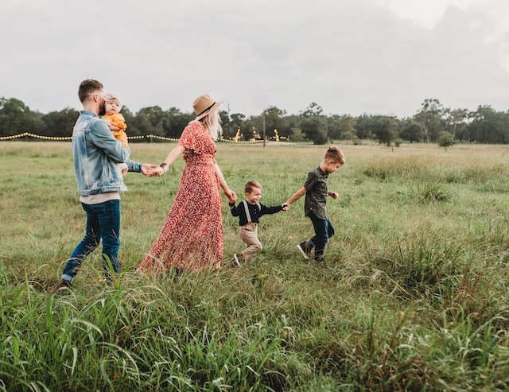

социальная и духовная
реабелитация
зависимых

АНО СПГ «Выход есть»
Мы твердо верим — выход есть и зависимость не приговор.
Каждый из нас победил в этой сфере и изменил свою судьбу.
Уже 17 лет мы помогаем освободиться от алкоголя и накркотических веществ,
справиться со сложной жизненной ситуацией, восстанавить взаимоотношения
и семьи, вернуться к ясному видению в своей жизни.
Направления организации
Комплексное
восстановление
личности
Поэтапная программа физического, психологического, социального и духовно-нравственного восстановление зависимых людей.
подробнее
Сила
здоровой
семьи
Уже 17 лет мы помогаем решать
проблемы, которые привели к зависимости.
подробнее
помогаем
- Зависимым от алкоголя, накотических и психоактивных веществ
- Людям в сложной жизненной ситуации
- Семьям, столкнувшимся с проблемой зависимости
Курс восстановления личности

На встречу новой судьбе
Мы работаем по программе духовного восстановления «Исход».
Участие в программе основанно на принципах добровольности и возможно только при
информированном согласии участника и родителей. Мы не применяем никаких силовых
или насильственных методов, но помогаем убедительным словом, личным примером, любовью и
искренней верой в каждого.
1. ЗНАКОМСТВО
В-первую очередь мы встречаемся с вами или вашим родственником, нуждающимся в помощи.
На три дня мы приглашаем в гости к одному из волонтеров программы «Выход есть». Туда, где
нет привычного вредного окружения и соблазнов.
Здесь можно "прийти в себя", спокойно и взвешанно познакомиться с программой
помощи и принять решение о своей дальнейшей судьбе.
2. Восстановление
Участники программы совместно проживают в загородном доме,
в дали от привычных соблазнов и искушений.
Объединенные общей целью, под руководством опытных наставников, они заново учатся жить трезво,
восстанавливают утраченные социальные и бытовые навыки.
Контакты сведены к минимуму. Добровольная изоляция от «внешнего мира» позовольяет по-новому взглянуть
в себя и пересмотреть свою жизненную позицию.
3. Адаптация
Через 4-5 месяцев участник программы переезжает в город.
Он продолжает проходить реабелитацию:
занимается добровольческой социальной работой и проживает с наставником в
«доме на пол пути» — квартире на 5-7 человек.

Ежедневный труд на благо социума и помощь другим людям помогают участнику пересмотреть систему
ценностей и свои ключевые мотивы. Он учится ответственности, находит себя и свое новое призвание,
формирует новый круг общения.
4. Социализация
Сила семьи

ИСЦЕЛЕНИЕ НАЧИНАЕТСЯ С ВАС
Бесплатное сообщество для тех, чьи родственники проходят программу восстановления,
и тех, кто столкнулся в своей семье с проблемой зависимости.
Мы научим вас, как помочь родному человеку, попавшему в беду, как привести его к
исцелению и при этом жить полноценной жизнью, а не его проблемами.
сообщество помощи
- Еженедельные очные встречи, на которых мы расскажем, как направить любовь к близкому на его спасение.
- Личная поддержка по телефону в сложные моменты и минуты отчаяния
- Группа в WhatsApp
Восстановление наркозависимых и алкозависимых представляет
Результаты и свидетельства
ОБРАТИТЬСЯ К НАМ
Для участия в программе обращайтесь
к нам в любое время. Даже, если вы
не знаете, что делать.
МОСКВА и МО
+7 (921) 123-45-67
+7 (921) 123-45-67
МЫТИЩИ
+7 (921) 123-45-67
+7 (921) 123-45-67
ОРЕХОВО-ЗУЕВО
+7 (921) 123-45-67
+7 (921) 123-45-67
САНКТ_ПЕТЕРБУРГ
+7 (921) 123-45-67
+7 (921) 123-45-67